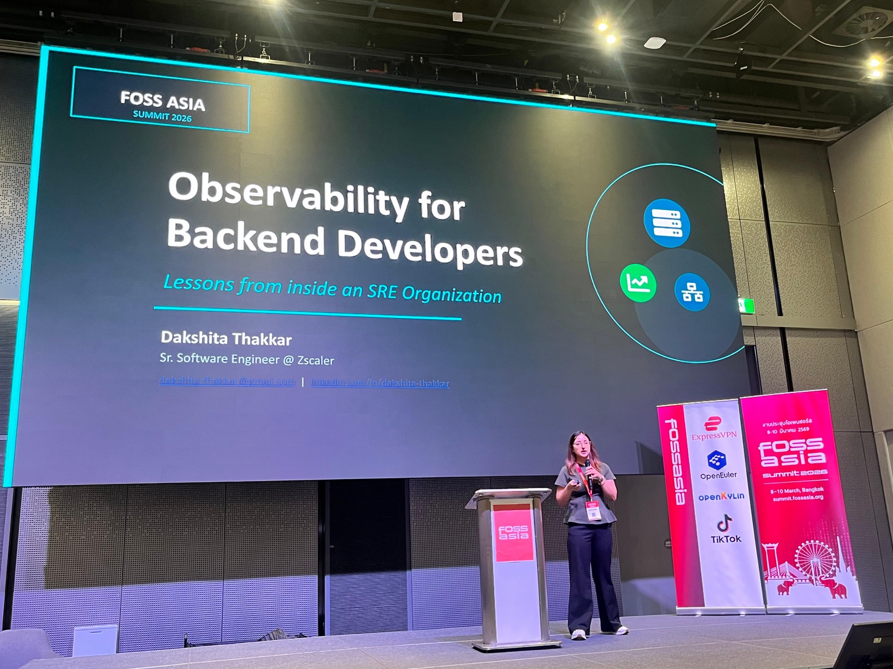

03 / TECHNICAL SPEAKINGFOSSASIA Summit · Bangkok
SPEAKER · FOSSASIA SUMMIT 2026 · BANGKOK
Observability for
Backend Developers
Lessons from Inside an SRE Organization
FOSSASIA SUMMIT 2026
At FOSSASIA Summit 2026 in Bangkok, I shared lessons from working inside an SRE organization. The talk looked at how backend developers can make observability part of everyday engineering, from logs, metrics, and traces to the incident lifecycle.
I covered SLIs, SLOs, error budgets, alert fatigue, and open-source tools teams can start using. It was a chance to bring practical lessons to a room of engineers who care about the same questions, and to learn from the conversations around the talk.